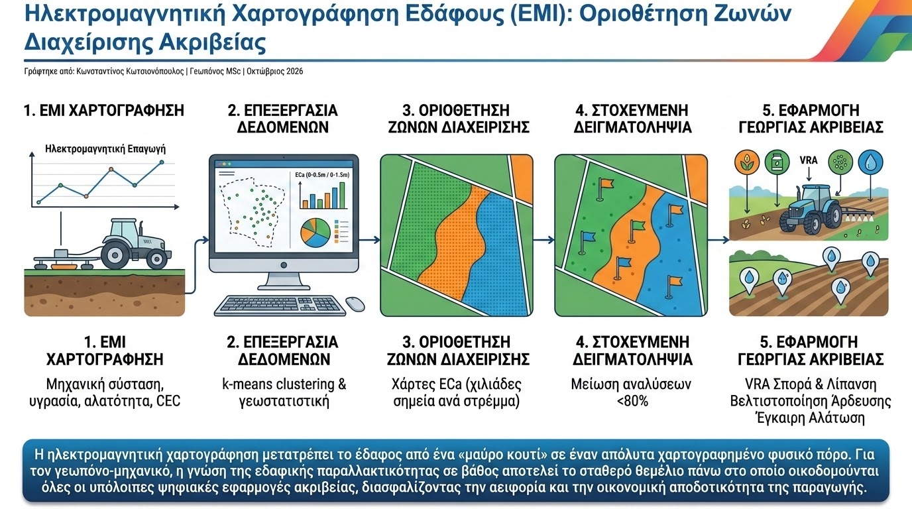

Η ανομοιομορφία των εδαφικών ιδιοτήτων εντός ενός αγροτεμαχίου αποτελεί τον πρωταρχικό παράγοντα διακύμανσης των αποδόσεων και της αποτελεσματικότητας των εισροών. Παραδοσιακά, η αποτύπωση της εδαφικής παραλλακτικότητας στηριζόταν σε δειγματοληψίες πλέγματος (grid sampling) και εργαστηριακές αναλύσεις, μια προσέγγιση κοστοβόρα, χρονοβόρα και με χαμηλή χωρική πυκνότητα. Η σύγχρονη γεωργία ακριβείας ξεπερνά αυτόν τον περιορισμό μέσω γεωφυσικών μεθόδων εγγύς τηλεπισκόπησης, με κυρίαρχη την Ηλεκτρομαγνητική Επαγωγή (Electromagnetic Induction - EMI).
Οι αισθητήρες EMI λειτουργούν χωρίς άμεση ηλεκτρική επαφή με το έδαφος: ένας πρωτεύων πομπός εκπέμπει ένα εναλλασσόμενο ηλεκτρομαγνητικό πεδίο χαμηλής συχνότητας, επάγοντας δευτερογενή δινορεύματα στο έδαφος. Το επαγόμενο μαγνητικό πεδίο καταγράφεται από έναν ή περισσότερους δέκτες σε διαφορετικές αποστάσεις, επιτρέποντας τον υπολογισμό της Φαινόμενης Ηλεκτρικής Αγωγιμότητας (Apparent Electrical Conductivity - ECa) σε διαφορετικά βάθη του εδαφικού προφίλ (π.χ. 0-0.5m και 0-1.5m). Η τιμή της ECa αποτελεί ολοκληρωμένη συνάρτηση κρίσιμων παραμέτρων: της μηχανικής σύστασης (περιεκτικότητα σε άργιλο), της υγρασίας, της αλατότητας και του βάθους του ριζοστρώματος.

Συνδέοντας τη διάταξη EMI με δέκτη υψηλής ακρίβειας RTK-GPS σε κινούμενη πλατφόρμα (όπως quad ή ελαφρύ ελκυστήρα), δημιουργούνται χωρικά πυκνοί χάρτες ECa με ανάλυση χιλιάδων σημείων ανά στρέμμα. Με την εφαρμογή γεωστατιστικών εργαλείων και αλγορίθμων ομαδοποίησης (k-means clustering), το αγροτεμάχιο διαιρείται σε ομοιογενείς Ζώνες Διαχείρισης (Management Zones). Η στοχευμένη δειγματοληψία πραγματοποιείται πλέον μόνο στα αντιπροσωπευτικά σημεία κάθε ζώνης, μειώνοντας τις απαιτούμενες χημικές αναλύσεις έως και 80%.
Τα επιστημονικά τεκμηριωμένα πλεονεκτήματα της οριοθέτησης ζωνών μέσω EMI περιλαμβάνουν:
- Ορθολογική Καθοδήγηση Μεταβλητής Σποράς και Λίπανσης (VRA): Ζώνες με υψηλή συγκέντρωση αργίλου και μεγαλύτερη ικανότητα ανταλλαγής κατιόντων (CEC) διαφοροποιούνται αυτόματα στις δόσεις φωσφόρου, καλίου και στην πυκνότητα σποράς σε σύγκριση με αμμώδεις ζώνες.
- Βελτιστοποίηση Σχεδιασμού Άρδευσης: Ο σαφής διαχωρισμός ζωνών με διαφορετική υδατοϊκανότητα και σημείο μάρανσης επιτρέπει τη διαφοροποιημένη διάταξη των αρδευτικών τομέων και τη σωστή τοποθέτηση τηλεμετρικών αισθητήρων υγρασίας IoT.
- Έγκαιρη Ανίχνευση Αλάτωσης: Σε παράκτιες ή εντατικά αρδευόμενες περιοχές, η διαχρονική παρακολούθηση της ECa αποκαλύπτει τις εστίες συγκέντρωσης αλάτων πριν εμφανιστούν τοξικότητες στις καλλιέργειες.
Η ηλεκτρομαγνητική χαρτογράφηση μετατρέπει το έδαφος από ένα «μαύρο κουτί» σε έναν απόλυτα χαρτογραφημένο φυσικό πόρο. Για τον γεωπόνο-μηχανικό, η γνώση της εδαφικής παραλλακτικότητας σε βάθος αποτελεί το σταθερό θεμέλιο πάνω στο οποίο οικοδομούνται όλες οι υπόλοιπες ψηφιακές εφαρμογές ακριβείας, διασφαλίζοντας την αειφορία και την οικονομική αποδοτικότητα της παραγωγής.